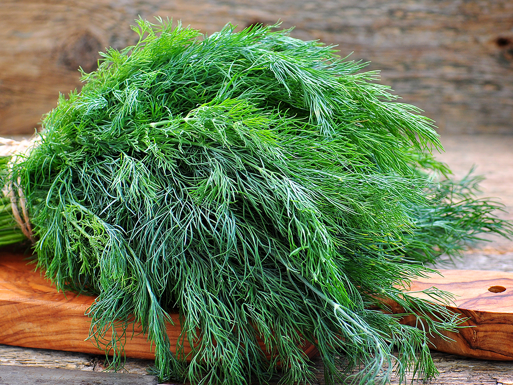
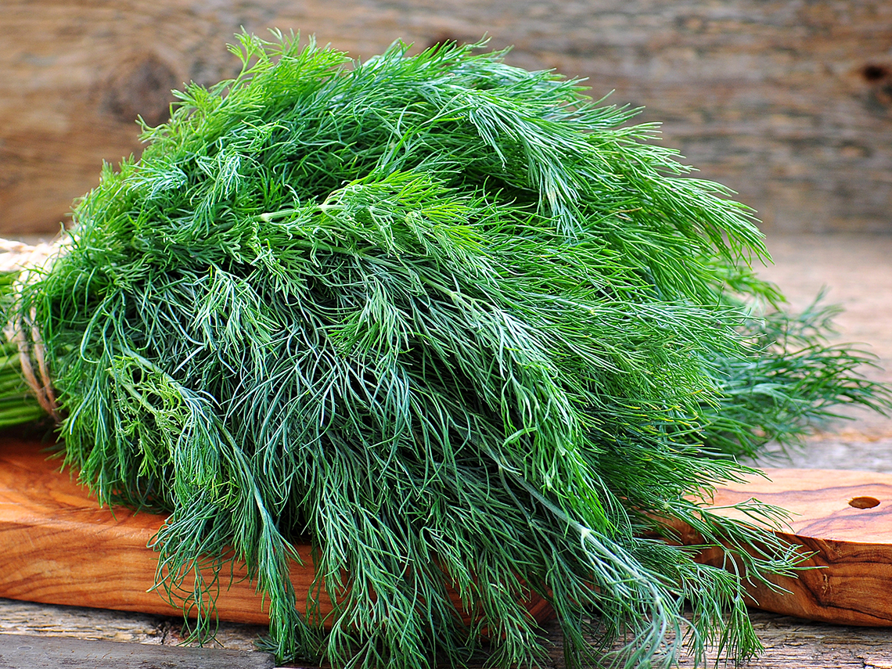
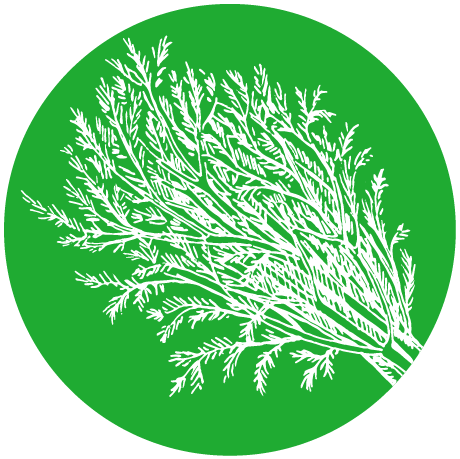

Dill
October 07 2021,
Alenka Mestek
|
Nutrition Facts |
|
| Portion Size | 1 g |
| Amount Per Portion | |
| Calories |
0,4 |
| % Daily Value* | |
| Total Fat 0g | 0 % |
| Sodium 0,6mg | 0 % |
| Total Carbohydrate 1,1g | 0 % |
| Dietary Fiber 0g | 0 % |
| Protein 0g | 0 % |
| Vitamin D 0mcg | 0 % |
| Calcium 2,1mg | 0 % |
| Iron 0,1mg | 1 % |
| Potassium 7,4mg | 0 % |
| * The % Daily Value (DV) tells you how much a nutrient in a serving of food contribute to a daily diet. 2,000 calories a day is used for general nutrition advice.
**Source: www.nutritionvalue.org |
|
DILL WEED HERB. Dill is an annual herb in the celery family Apiaceae. Its English name ‘dill’ comes from Old Norwegian, in which the word ‘dylla’ meant to soothe or lull. Is traditionally an »medicine« for hiccups, insomnia or indigestion.
Dill - scientific name Anethum graveolenss. It grows 40 to 120 cm high. It blooms in large, yellow buds. The leaves are bluish green. The seeds are small elliptical and flat.
Dill leaves are known as the dill weed herb and used for potato soup, light sauces, cucumber and tomato flavorings, mayonnaise and salad dressings, potato and bean dishes. Whole twigs with flowers are used for pickling pickles, peppers, tomatoes. Fresh leaves taste reminiscent of parsley and anise, so they go well with soft cheeses, white sauces, egg dishes, seafood and poultry, salads, soups and vegetable dishes, especially potatoes.
Dill seed is used as a spice. Dill seeds develop more aroma and flavor when they are toasted in a hot frying pan before being added, while dill weed will lose flavor the longer it is cooked, so it should be added at the last minute only.
Dill as a herbal medicine - useful parts are dried ripe fruits (seeds). The essential oil, which contains dill, is the most important ingredient in the preparation of dill water, a popular remedy for wind and intestinal cramps in infants and children. Dill seeds have also been widely used to promote milk secretion in breastfeeding mothers. With such use, the culinary quantities of dill seeds are enough to pass on the healing properties of the herb to the child.
Fresh dill sprigs are naturally full of nutrients such as Vitamin A, C, D, riboflavin, iron, manganese, potassium, folate, copper, magnesium, zinc and dietary fibres. It is rich in antioxidants and may have several benefits for health, including protection against heart disease and cancer.

Green quiches with vegan feta cheese
 Preparation: 10 min
Preparation: 10 min
 Cooking: 20 min
Cooking: 20 min
 Difficulty: easy
Difficulty: easy
 Servings: 4
Servings: 4
vegan, gluten free, dairy free
How to store dill?
1. In the refrigerator: keep loosly wrapped in a plastic.
2. On the room temperature: Place dill in a jar or glass of water. It could be a decortion element in the room Like flowers.
3. In the freezer: Choped dill put in a sealed ice tray and freeze. Ice cubes of dill are very practical.
Photo credits:
iStockphoto